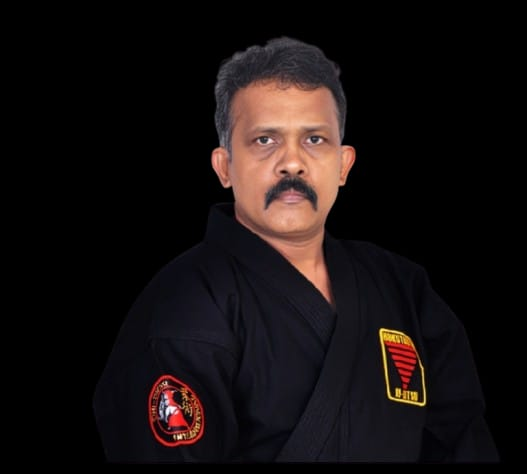
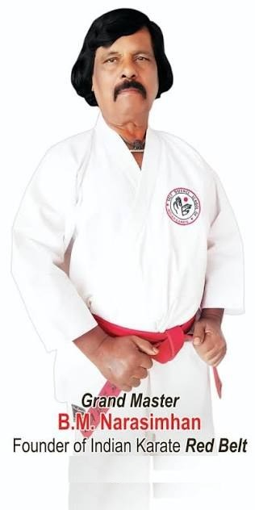

Our Story, Our Standards
Founded in 2001 by Sensei P. M. Gnanasekar, Sentou-Ken Martial Arts Academy has grown into a platform dedicated to developing martial artists in Chennai — through structured training, discipline, physical fitness, confidence and character. Now training across 3 branches in Karate (Shito-Ryu), Judo, Jujutsu, Kenjutsu and more.
One for All. All for One.
Discipline. Respect. Self-Defence.
These three words guide everything taught on our mat. Discipline builds the habit of showing up and doing the work. Respect shapes how students treat instructors, training partners and themselves. Self-defence gives students real, practical ability — not just for competition, but for life.
"We cannot always build the future for our youth; but we can build our youth for the future."
— Sensei P. M. Gnanasekar
SENSEI P.M.G.

Sensei P. M. Gnanasekar began his martial arts journey at the age of 15, inspired by legendary martial artists and driven by a deep passion for the discipline and philosophy of martial arts. Over more than 30 years of dedicated practice and teaching, he has trained more than 25,000 students.
Through years of sincere effort and rigorous training, he has attained the rank of 7th Dan Black Belt in Karate (Shito-Ryu) and 3rd Dan Black Belt in WSKF (World Shito-Ryu Karate Federation). His expertise extends into Judo (Judo Federation of India), Jujutsu (5th Dan), Kenjutsu (1st Dan), and roughly 20 years of practice in Kalaripayattu, Varmam, Silambam, Simmakalari and Adimurai.
Competitive Record
Honoured twice with the title "Best Fighter," and recipient of the Rotary Club Vocational Excellence Award for "Best Martial Artist."
Beyond the academy, Sensei P. M. Gnanasekar has served as an instructor at the Police Training Academy, Vellore; currently serves as a National Referee in KIO; and is Chief Instructor for the South Zone in Jujitsu and Kenjutsu, International India. He has also led a women's empowerment initiative — seminars and self-defence training in schools and colleges focused on practical skills, confidence and awareness.
"The essence of martial arts is the journey of continuous self-improvement — physically, mentally, emotionally, and spiritually."
Grandmaster B. M. Narasimhan
Sensei P. M. Gnanasekar is a proud student of Grandmaster B. M. Narasimhan, Founder of the Self Defence School of Indian Karate.

Grandmaster B. M. Narasimhan was a pioneering Indian martial artist whose training spanned Karate, Judo, Muay Thai and self-defence — becoming National Champion in Judo in 1968 before devoting himself to Karate. From the 1970s onward, he played a defining role in expanding structured Karate training across India, associated with the development of Indian Karate and Goshin-Ryu, and mentoring generations of instructors who went on to found their own schools.
"A true master leaves his legacy not only through his achievements, but through the students he inspires."
Led By Experience
Loading…